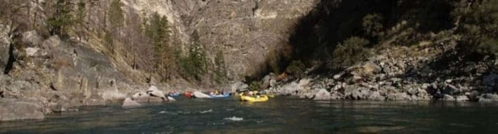

At Conquer the Rapids, our mission is to guide you through thrilling and safe adventures, ensuring that every rapid conquered becomes a unique and unforgettable part of your life’s journey.

Conquer the Rapids
Here you will conquer every challenge and experience the thrill of a lifetime. Come to Conquer the Rapids and embrace the adventure that will push your limits and create unforgettable memories.
History
Conquer the Rapids began as a simple idea fueled by a passion for adventure and nature. Over time, it grew into something much bigger—a mission to help others experience the thrill of overcoming challenges on the water. What started as a personal passion transformed into a dream of providing unforgettable moments for those who crave excitement and connection with nature. Today, Conquer the Rapids stands as a testament to how far a love for adventure can take you, offering others the chance to create their own incredible stories.
Adventure Awaits You!
No matter your skill level, Conquer the Rapids offers an adventure designed just for you. Whether you prefer a peaceful float down the river or the thrill of conquering powerful rapids, every trip promises excitement and unforgettable moments.